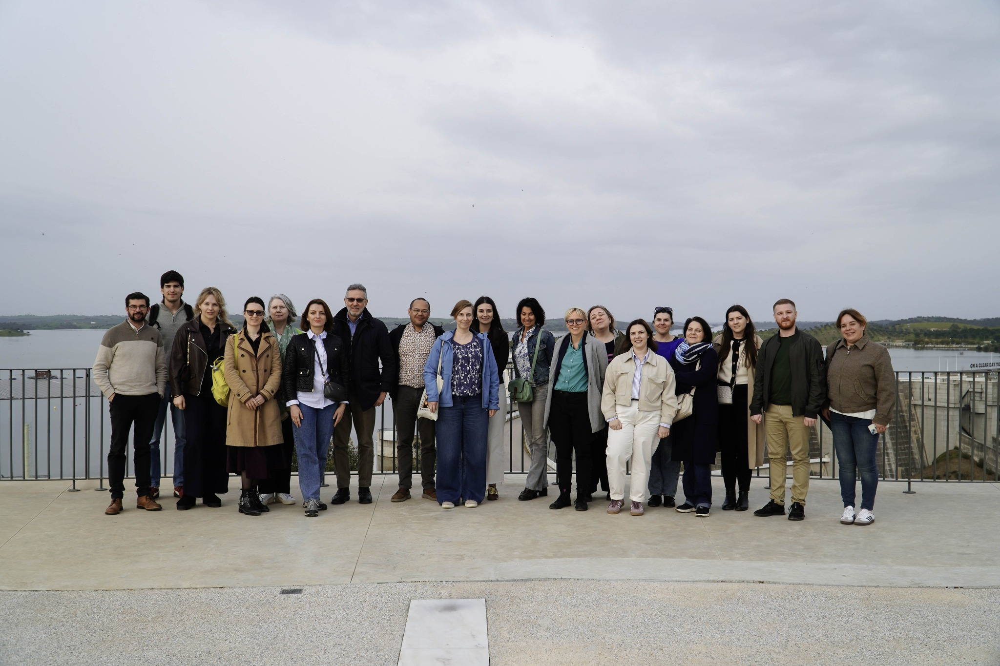

Dołącz do grona instytucji i ekspertów, którzy współkształtują rekomendacje do Europejskich Funduszy dla województwa Śląskiego 2021–2027. Bezpłatnie.
Chcę dołączyć do RSGbezpłatne uczestnictwo · 1–2 spotkania rocznie · bez zobowiązań

Regiony europejskie wydają miliardy na laboratoria, parki technologiczne i centra innowacji. Tymczasem Cedefop dokumentuje: prawie połowa pracowników ma kompetencje, których ich miejsca pracy po prostu nie wykorzystują. Jednocześnie co trzeci pracodawca nie może znaleźć właściwych ludzi.
Problem nie leży w braku wiedzy ani infrastruktury. Leży w kompetencjach społecznych i interpersonalnych - umiejętności współpracy, budowania relacji i przekładania badań na realne działania.
Dokładnie to diagnozuje i stara się zmienić projekt SOCORE w sześciu krajach europejskich.
RSG to nie kolejny komitet doradczy. To mechanizm wpływu - Twoje instytucjonalne zdanie trafia do rekomendacji projektowych, które idą do instrumentów polityki finansowanych z Europejskich Funduszy dla Śląska 2021–2027.
Wspólnie identyfikujemy mocne strony i luki kompetencyjne w ekosystemie badań i innowacji województwa Śląskiego. Twoja perspektywa praktyczna jest kluczowa.
Porównujemy praktyki województwa Śląskiego z doświadczeniami z Holandii, Portugalii, Włoch, Mołdawii i Litwy. Dobre praktyki które można przenieść - identyfikujemy razem.
Wypracowane wnioski trafiają do instrumentów wsparcia B+R+I w ramach Europejskich Funduszy dla województwa Śląskiego. Twój głos kształtuje te rekomendacje.
Wyniki badań z Holandii, Portugalii, Włoch, Mołdawii i Litwy - gotowe do cytowania w dokumentach strategicznych, planach i raportach.
Bezpośredni udział w wypracowaniu rekomendacji do instrumentów wsparcia B+R+I w ramach EFS 2021–2027 i RIS Województwa Śląskiego 2030.
Bezpośrednie relacje z instytucjami zarządzającymi funduszami B+R+I w 5 krajach UE. Nie wymiana wizytówek - wspólna praca.
Cytowanie w raportach Interreg Europe, udział w spotkaniach z partnerami z 6 krajów, widoczność w komunikacji programowej.
Pełne możliwości uczestnictwa omawiamy na pierwszym spotkaniu RSG. Zapisz się - i przekonaj się osobiście.
Zaprojektowaliśmy uczestnictwo w RSG tak, żeby było realne - nie tylko na papierze.
SOCORE to projekt Interreg Europe (2025–2029) realizowany przez 9 partnerów z 6 krajów Europy. Jego serce jest proste: regiony, które chcą lepiej wdrażać innowacje, muszą inwestować nie tylko w technologię - ale w ludzi, którzy potrafią ze sobą współpracować, budować zaufanie i przekładać wiedzę na realne działania.
Koordynuje Maria Garus, Uniwersytet Śląski w Katowicach. Projekt jest współfinansowany przez Interreg Europe ze środków Europejskiego Funduszu Rozwoju Regionalnego.
Trzy pola - 30 sekund.
Kolejne spotkanie: 29 kwiecień 2026, on-line
Dziękujemy za zainteresowanie. Skontaktujemy się z Tobą w ciągu 3 dni roboczych na podany adres e-mail.
W razie pytań: socore@us.edu.pl